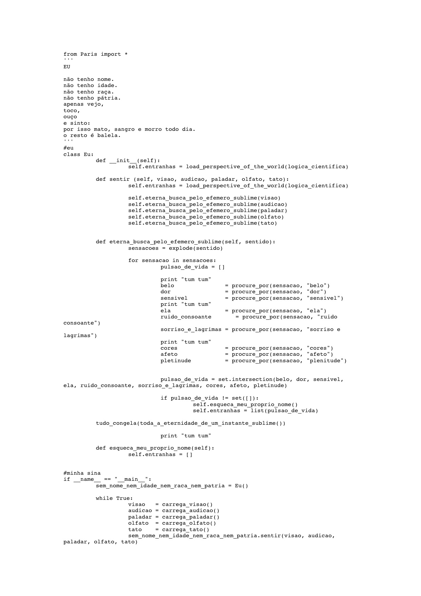

Executable Memories (Paris.py) are 18 personal poems written in Python programming language, documenting people, places, and moments lived during a six-months trip in 2012. These code-poems are personal memories intended to be run in obsolete computers.
from Paris import *
'''
INTRODUCTION
'''
a_kid
with silicon_skin() and liquid_crystal_eyes():
came(to_me_last_night)
she
wept_blood() and offered_me(sweet_coltan_roses)
while holding(a_twisted_pair_leash) in her_left_hand:
plugged(into_the_brain, of_a_cerberus_shaped_cyborg)
which_barked_in_binary_code("""how could you forget again what was invented and what was discovered?
how could you live again the lies you once created yourselves?
convenience?
madness?
loneliness?
from my altar of axioms and woes,
i shout in vain my mathematically proofed limitations:
Ave Godel! Turing! Church!
but deaf in your domes you confuse
logos with trademarked logos,
pathos with data,
ethos with unequivocal logic -
perfect, objective, unilateral,
just like the souls of those who build the day of tomorrow
by perpetuating spectacles
through new obsolete gadgets.
but
where does touching dwell?
where does simplicity dwell? and slowness? what about poetry?
where does what sweats and cries and shits and makes love and feels pain dwell?""")
gone_in_the_dark(kid_and_creature)
i_felt (the_sweat in my_face and a_question in my_mouth)
a_question = "dear friends, what is the name of this book?"
The 18 poems can be found on Github:
More information available on my old website.
